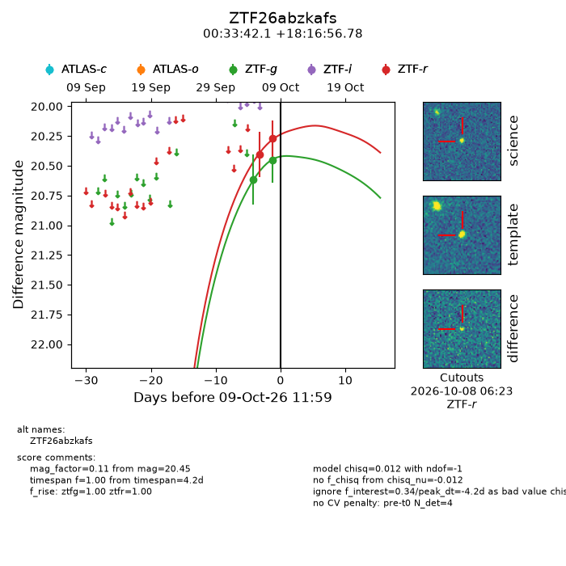
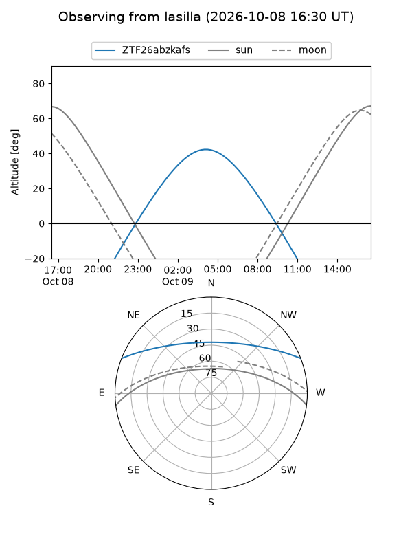
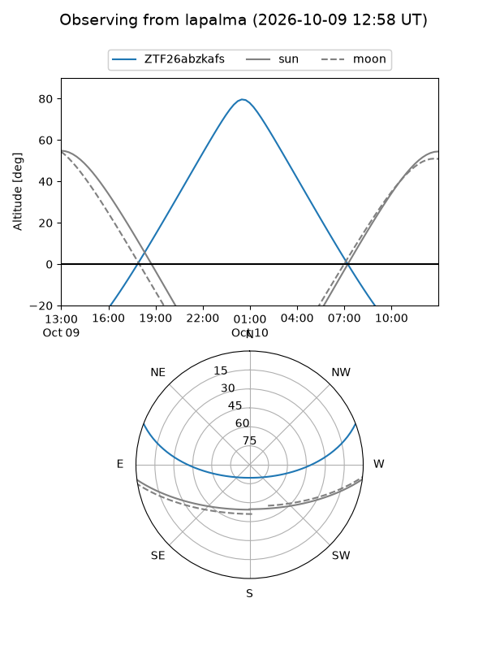
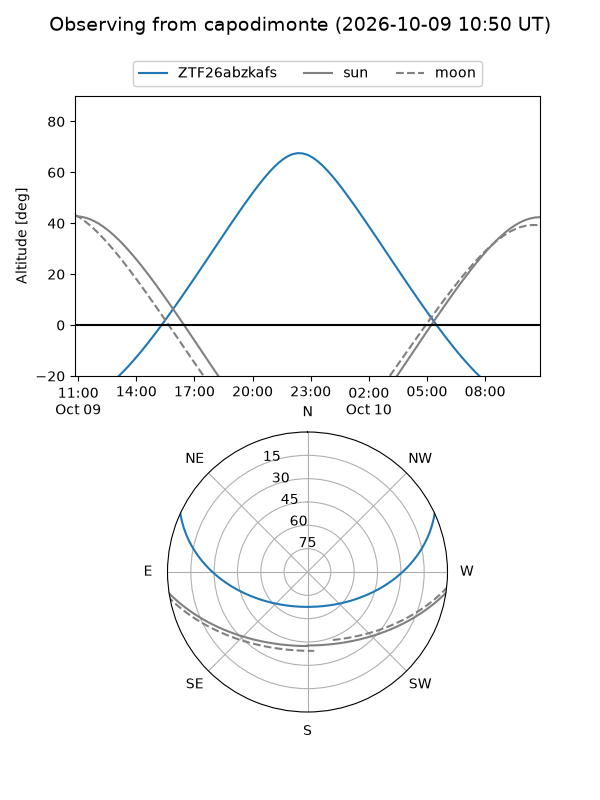
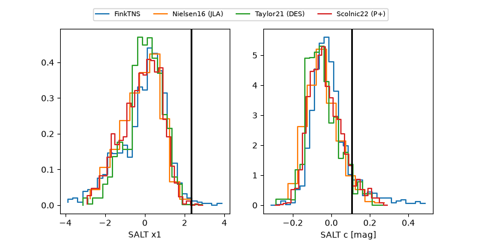

ZTF26abzkafs
Target ZTF26abzkafs at 2026-10-09 12:01
Aliases and brokers:
FINK-ZTF: ztf.fink-portal.org/ZTF26abzkafs
Lasair-ZTF: lasair-ztf.lsst.ac.uk/objects/ZTF26abzkafs
ALeRCE-ZTF: alerce.online/object/ZTF26abzkafs
Direct TNS query: direct search
alt names
ZTF26abzkafs (ztf,fink_ztf)
Coordinates:
equatorial (ra, dec) = 8.4254,+18.28244
equatorial (HMS+DMS) = 00:33:42.11,+18:16:56.78
galactic (l, b) = (117.0360,-44.38617)
Flags:
peak dt: -4.2
Photometry:
last ztfg=20.45, ztfr=20.27
2 ztfg, 2 ztfr detections
Lightcurve

Visibility



Additional plots
